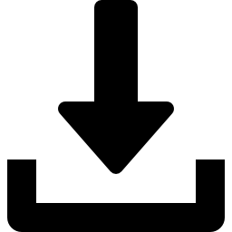
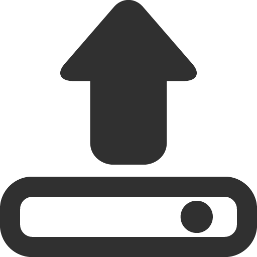
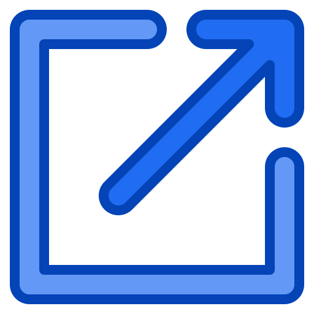
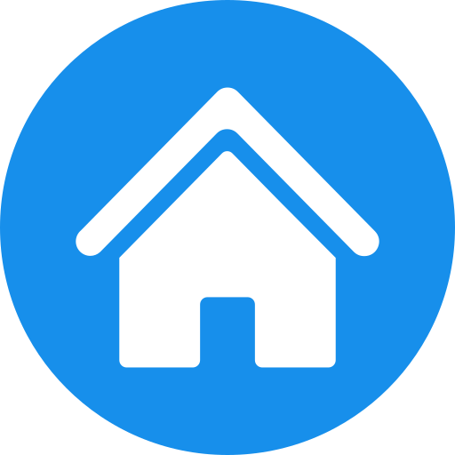

Mission Control
Configuration

Generate Configuration

Select Config File
No file selected

Upload Config
Select TLE File
No file selected
Upload TLE
Load Configuration
Init Scenario
Stop all VMs
Load & View TLE
Simulation Control
Run Simulation
Start
Stop
Get Status
Reload CZML
System Status
Static demo — controls are not functional
Sim Time: replay of a saved scenario
